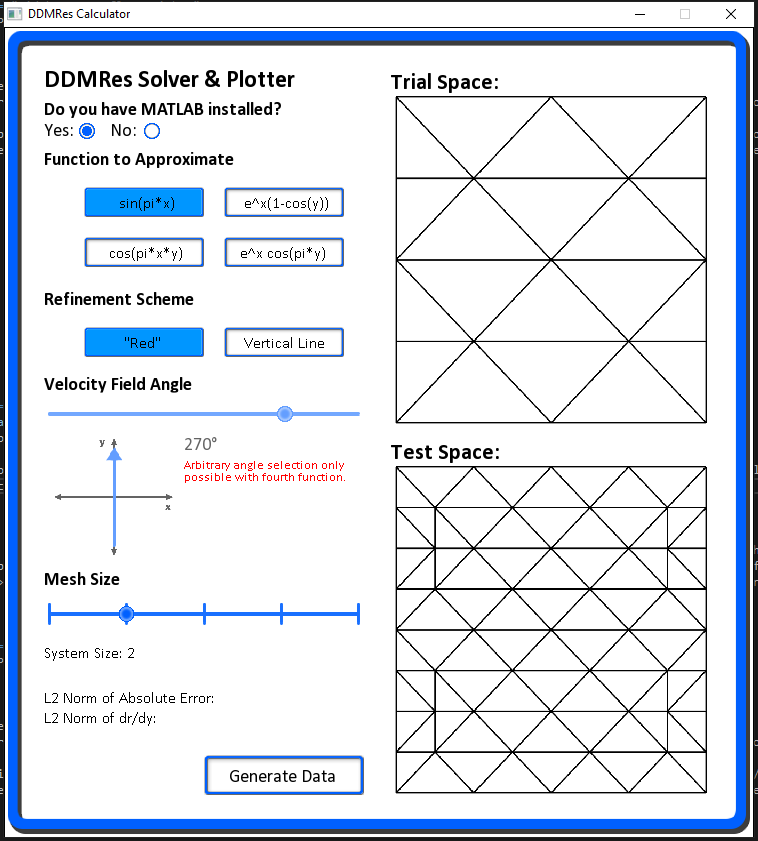

Dissertation Project
The advection equation models the tranport of a substance through a medium, subject to some velocity field, and has important applications in fluid mechanics. Even basic advection problems result in hyperbolic partial differential equations, which are notoriously difficult to solve numerically. Much work has been done on the solution of advection (and "advection-reaction") problems using finite element methods, and my dissertation project was an extension of a state of the art "minimal-residual" technique to an important test case.
For this project, I wrote several C++ programs to define and solve the problem on this test case. Using object orientation principles, I constructed classes to define the mathematical objects that are used in the discretisation methods, and then designed additional routines to construct and solve the resultant system. Ultimately, I was able to demonstrate optimal convergence rates to known solutions, which had not been achieved before in this way. I have since extended the program to take user input via a user interface I designed, and recreate the main results used in my dissertation project.
Finite Element Methods
Broadly speaking, finite element methods (in 2D) can solve a partial differential eqauation by dividing a space into discrete triangles (called elements), constructing a system of equations based on this discretisation, and then solving that system to obtain an approximation for the solution to the equation at some points within this subdivision (or mesh). Any implementation of these methods in 2D needs to be able to deal with these meshes in a way that can directly relate to their co-ordinates in 2D space.
The "Peterson Mesh", a subdivision of the unit square.
A technicality of these methods is the need to construct not one, but two subdivisions of the space in question - one trial space, and one test space. The distinction between the two is not usually important (say, in a standard Galerkin Method)
because the trial and test spaces are required to be the same. However, the method used in my dissertation, the discrete-dual minimal residual (DDMRes) method, imposes no such restriction, and in most cases requires them to be different (especially in the context of advection).
The generation of the system of equations to solve requires calculating several integrals over the product of the elements of both spaces. What this means practically is that you need to be able to calculate the area associated
with the overlap of every element in one space with every element of the other.
As a result, it is much more convenient computationally to build one space as a procedural "refinement" of the other (meaning simply that the test space is 'built on' the trial space in some structured way).
The "Red Refinement", of the above mesh.
The Peterson Mesh, on which my dissertation was focused, was refined in two ways in this project - The so-called "red refinement", which divides every element into four smaller elements, and the "vertical line" refinement (my own construction), which draws vertical lines at certain steps along the mesh, depending on its degree.
A more in-depth explanation of these principles can be found in section 4.2 onwards in my dissertation report. These meshes are among the more challenging
mathematical objects that it was necessary to capture in some general way upon implementation. The nature of my dissertation was open-ended, so as to encourage an expansion upon the work. As a result, when designing this code, I wanted to write routines that
would work in general, not just for the specific cases I wanted to test.
Implementation
One of the basis functions of the Peterson Mesh Implementation of the construction & solution stages were written entirely in C++. Along with a class to handle Vectors (& some relevant operations thereof) modified by an earlier module I'd taken, I designed a general purpose Matrix class that includes operator overloads for basic matrix arithmatic, as well as more complex algorithms like Gaussian Elimination (used later in the project). Additionally, I designed a class to handle the meshes I would be using, which defines them in terms of a Vertex Array (where each of the vertices are located in terms of x,y coordinates) and a Connectivity Array (which vertices need to be joined by lines in order to achieve the mesh). The mesh class also contained methods to perform red refinement (which works for any mesh that is stored in the object variables), and the vertical line refinement I had designed (which was specifically defined on the Peterson mesh). Finally, I needed to design a class to handle basis functions, which are also necessary to perform the integrals. These objects store their own private matrices, which in a way also define the mesh of points on which they are defined.
The main routine I designed to implement the DDMRes methodology first takes a Peterson Mesh of a given degree, refines it (with one of the two given methods), constructs one basis function object for each vertex in the test space, and performs all of the necessary integrals required to set up the system of equations. It then solves this system with the Gaussian Elimination routine that I wrote. Unfortunately, as a result of Gaussian Elimination being an O(n3) process (where n is the number of equations), and the Peterson mesh degree m resulting in a system size of O(m2), the entire routine execution time is proportional to m5. As a result doubling the solution's resolution means the routine takes ~32 times longer to execute. In general, the solution matrices are sparse, so it is likely there is some much better solution algorithm that would make these results significantly more efficient to generate.
An approximation to sin(πx) generated with DDMRes
Once the solution had been found, the routine writes them to a text file, which is then read in by a MATLAB script. The solution points are not uniform, so the script performs a linear interpolation on the data set such that it can be represented on a uniform 50x50 grid.
The main C++ routine also generates for reference two measures of the error relative to the exact solution. As I showed in my report, these are halved for a doubled resolution size, which demonstrates an optimal convergence rate that proved a novel result.
The source code for this implementation can be found in my github repository for the project. Given more time for the project, I would have explored different meshes, specifically convex polygonal domains,
and a curvilinear (non-constant) velocity field. These would each prove a significant extra challenge to implement, but could be built logically from the code I have written.
Designing a User Interface
 The User Interface I designed Once my dissertation was complete and my report handed in, I was aware that I'd want to be able to share the code I'd written in the context of a portfolio (and with other people in my personal life), so I decided to set myself the challenge of designing a GUI to take in user input and recreate the results used in my dissertation.
As an additional challenge, I decided to work with a C++ library called SFML that essentially handles object rendering, transformation and not much else. This meant that all of the behaviours of a regular GUI needed to be designed from the ground up. I was aware that there
were much better options for an implementation of this kind, but I thought it would be more interesting to do it from a 'lower' level. All of the UI objects were designed by myself also, and the behaviours (like the options, slider & mouse hovering behaviours) were designed from first principles.
This actually proved much more challenging than I had originally anticipated, as there are many elements to how a fluid GUI operates that you might not consider if you're just using one, rather than designing it.
The interface takes a selection of one of four functions, of which the fourth can be selected with an arbitrary velocity field angle. It then takes an option for which refinement method to use, and what size Peterson Mesh to build the solution on.
If MATLAB is installed on the machine, it also runs the MATLAB code to plot the results for visualisation, and recovers this plot (and the viewing angle) for reference if you want to, say, change the field angle slightly to investigate how that changes results. It will also report both of the error metrics for reference.
The release & executable for this version of the code can be found in github repository for the project. In the future, I also want to design some level of integration of the code onto this webpage.